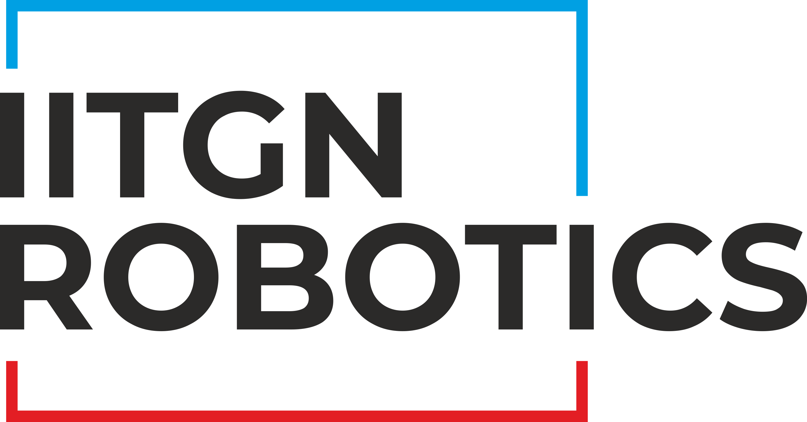
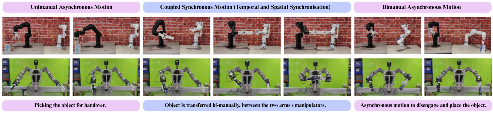
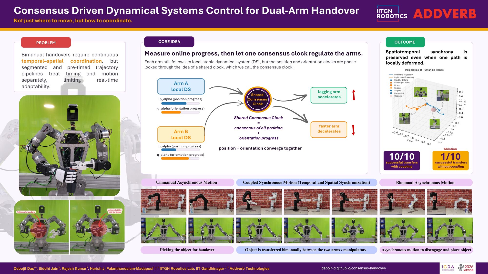
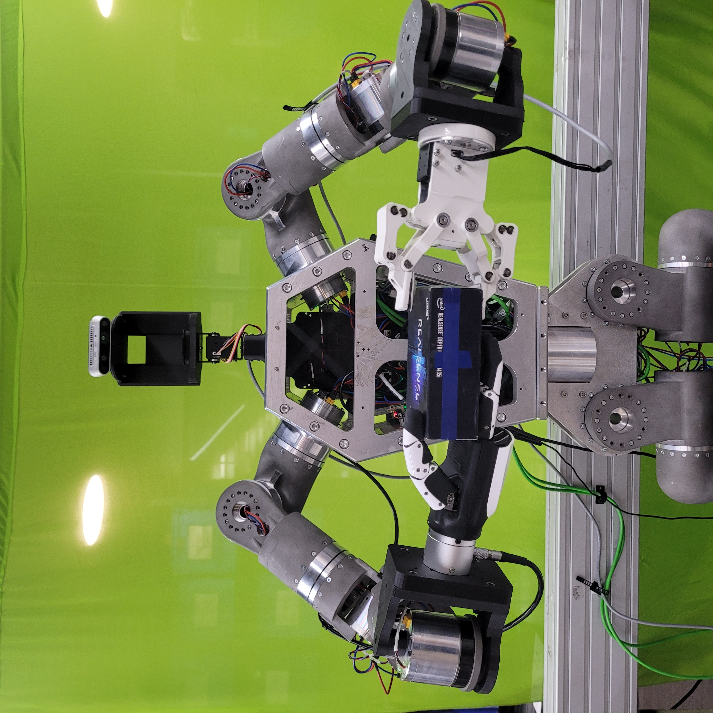
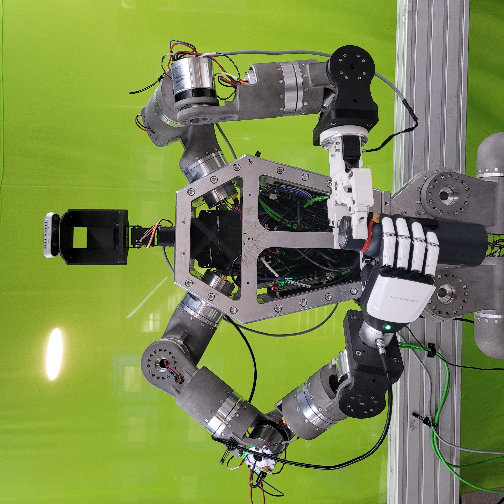

Published: Proceedings of the 2026 IEEE International Conference on Robotics and Automation (ICRA), Vienna, Austria.
View on IEEE Xplore
View on IEEE Xplore
Proceedings of the 2026 IEEE International Conference on Robotics and Automation (ICRA) • Vienna, Austria


Snapshots across asynchronous pick-up, coupled synchronous handover, and asynchronous retreat.

Robot bimanual handovers (transferring an object between two arms) require careful coordination of timing, motion, and obstacle avoidance. Efficient, human-like object transfer between cooperating robots demands both spatial and tight temporal coordination. Existing approaches treat these requirements in isolation or rely on pre-computed trajectories that fail when obstacles/disturbances appear, degrading performance, segmented behavior, and introducing desynchronization. This paper introduces a dynamical systems framework that transitions each arm from independent asynchronous motion to coupled synchronous coordination. In this context, coupling denotes both the spatial coordination of the arms and their temporal synchronization. The framework's coordination and synchrony are robust to obstacles/disturbances along its path. Experiments on an upper torso dual-arm platform and on traditional manipulators show seamless handovers that remain stable despite obstructions, always preserving spatial coordination and temporal synchrony.

(a) Handing over a box

(b) Handing over a bottle
Phase-locked bimanual handover with obstacle-aware DS modulation.
@inproceedings{das2026consensus,
author = {Das, Debojit and Jain, Siddhi and Kumar, Rajesh and Palanthandalam-Madapusi, Harish J.},
title = {Consensus Driven Dynamical Systems Control for Dual-Arm Handover},
booktitle = {Proceedings of the 2026 IEEE International Conference on Robotics and Automation (ICRA)},
address = {Vienna, Austria},
year = {2026},
url = {https://ieeexplore.ieee.org/document/11696649}
}